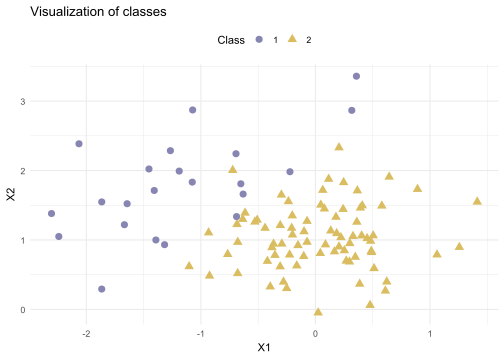
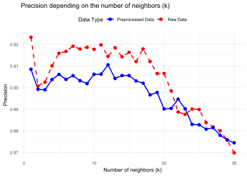

library(caret)
library(MASS)
library(ggplot2)3 k-nearest neighbors (kNN)
The k-nearest neighbors algorithm or k-NN, like linear regression, is a supervised learning algorithm, so we have the set of \((x_i,y_i) i=1,···,n\) labeled data.
This is a non-parametric model (unlike regression), i.e. the model has no parameters whose value must be optimized. (k is not a parameter but a hyperparameter).
In the case of a classification algorithm, the outputs \(y_i\) correspond to the possible classes(and not continuous values, as in regression). The input \(x_i\) is a vector of dimension \(p\), containing the different variables associated with an input, an individual.
3.1 Principle
- For each new input \(x_0\), we measure the distance between \(x_0\) and the inputs \(x_i\) for all \(i\) in \({1,··· ,n}\).
Note
Different distance measures (Euclidean, Manhattan…) can be used for this algorithm, depending on the problem studied.
\[\begin{align} A(x_A,y_A,z_A)\: B(x_B,y_B,z_B)\\ d_{Euclidean}(A,B) &= \sqrt{(x_B - x_A)^2 + (y_B - y_A)^2 + (z_B - z_A)^2} \\ d_{Manhattan}(A,B) &= |x_{B} - x_A| + |y_B - y_A| + |z_B - z_A| \end{align}\]We then select the \(k\) elements closest to the input.
The class predicted by the algorithm then corresponds to the majority class, i.e. the most frequent class in the k-NNs selected.
3.2 Applications
The k-NN algorithm is frequently used in both classification and regression.
It can also be used in shape recognition, with inputs containing the circumference, area or contour signature of the shape, and outputs corresponding to the various possible shapes.
3.3 Limitations
Warning
The value of k has a strong influence on prediction !
k too small: elements out of the ordinary will more easily influence the prediction. => This is the overfitting problem.
k too large: the model will take into account data that are too far apart, and the majority class will be predicted too often. => This is the underfitting problem.
When studying higher-dimensional problems, it is therefore essential to have a large amount of training data. For this reason, the k-NN algorithm quickly becomes unusable : beyond 4 or 5 dimensions, the number of data required becomes too large.
3.4 Practical
3.4.1 Example 1
We have a data of 10 points
| number | x | y | z | color |
|---|---|---|---|---|
| 1 | 3 | 7 | 5 | black |
| 2 | 4 | 6 | 2 | black |
| 3 | 3 | 7 | 8 | white |
| 4 | 0 | 1 | 2 | black |
| 5 | 1 | 0 | 7 | white |
| 6 | 5 | 4 | 4 | white |
| 7 | 9 | 1 | 2 | black |
| 8 | 5 | 3 | 3 | black |
| 9 | 1 | 1 | 4 | white |
| 10 | 2 | 3 | 7 | white |
We consider an eleventh point A with coordinates x = 4, y = 4 and z = 5
The Euclidean distances between the point A(4,4,5) and the points in the table have been recorded in the following table:
| point | 1 | 2 | 3 | 4 | 5 | 6 | 7 | 8 | 9 | 10 |
|---|---|---|---|---|---|---|---|---|---|---|
| distance | 3.16 | 3.60 | 4.16 | 5.83 | 5.19 | 1.41 | 6.55 | 2.45 | 4.16 | 3 |
We apply the k-nearest neighbors algorithm to predict the color at point A.
- If k = 1:
The closet point from A is point number 6 => A is white
- If k = 3:
The 3 closet points from A are number 6 (white), number 8 (black), number 10 (black) => A is black
- If k = 5:
The 5 closet points from A are number 6 (white), number 8 (black), number 10 (black), number 1 (black), number 2 (black) => A is black
3.4.2 Example 2
Data
train <- read.table(file="./data/synth_train.txt", header=TRUE)
head(train) y x1 x2
1 2 -0.72221141 2.0044709
2 2 -0.92467912 0.4836693
3 2 -0.76602281 0.7943289
4 2 -0.07328948 0.9699291
5 1 -1.39291198 0.9996971
6 2 -0.20223339 1.3503319Xtrain <- train[,-1]
Ytrain <- train$y
train$y <- factor(train$y)
train_data <- data.frame(X1 = train$x1, X2 = train$x2, Class = factor(train$y))
ggplot(train_data,
aes(x = X1, y = X2, shape = Class, color = Class)) +
geom_point(size = 3) +
scale_color_manual(values = c("#8785B2FF", "#DABD61FF"), name = "Class") +
scale_shape_manual(values = c(16, 17), name = "Class") +
labs(title = "Visualization of classes", x = "X1", y = "X2") +
theme_minimal() +
theme(legend.position = "top")
Train model
model_15 <- train(
y ~ .,
data = train, # Data
method = "knn", # k-nn algorithm
tuneGrid = data.frame(k = 15) # Number of neighbors
)a <- seq(from=min(train$x1), to=max(train$x1), length.out=100)
b <- seq(from=min(train$x2), to=max(train$x2), length.out=100)
grille <- NULL
for (i in a){
grille <- data.frame(rbind(grille, cbind(i,b)))
}
names(grille) = c("x1","x2")
train_data <- data.frame(Xtrain, Ytrain = factor(Ytrain))
pred_grille <- predict(model_15, grille, type = "raw")
grid_data <- data.frame(grille, pred_grille = factor(pred_grille))ggplot() +
geom_point(data = grid_data,
aes(x = grille[,1], y = grille[,2], color = pred_grille),
alpha = 0.5, size = 0.5)+
geom_point(data = train_data,
aes(x = x1, y = x2, shape = Ytrain, color = Ytrain),size = 3) +
scale_color_manual(values = c("#8785B2FF", "#DABD61FF"), name = "Class") +
scale_shape_manual(values = c(16, 17), name = "Class") +
labs(title = "Decision frontier for k=15 neighbors", x = "X1", y = "X2") +
theme_minimal() +
theme(legend.position = "topright")
Performance test
predictions = predict(model_15, Xtrain ,type = "raw")
CM_15 = confusionMatrix(predictions, train$y)
CM_15Confusion Matrix and Statistics
Reference
Prediction 1 2
1 15 1
2 7 77
Accuracy : 0.92
95% CI : (0.8484, 0.9648)
No Information Rate : 0.78
P-Value [Acc > NIR] : 0.0001699
Kappa : 0.7416
Mcnemar's Test P-Value : 0.0770999
Sensitivity : 0.6818
Specificity : 0.9872
Pos Pred Value : 0.9375
Neg Pred Value : 0.9167
Prevalence : 0.2200
Detection Rate : 0.1500
Detection Prevalence : 0.1600
Balanced Accuracy : 0.8345
'Positive' Class : 1
Validation
valid <- read.table(file="./data/synth_valid.txt", header=TRUE)
valid$y = as.factor(valid$y)
head(valid) y x1 x2
1 2 0.54837733 1.2213453
2 2 -0.51618236 1.5623959
3 2 -0.92877833 0.9210722
4 2 0.07000405 0.6197675
5 2 0.26702843 1.1094406
6 2 -0.57664073 1.0257432predictions = predict(model_15, valid ,type = "raw")
CM_15 = confusionMatrix(predictions, valid$y)
CM_15Confusion Matrix and Statistics
Reference
Prediction 1 2
1 27 0
2 10 63
Accuracy : 0.9
95% CI : (0.8238, 0.951)
No Information Rate : 0.63
P-Value [Acc > NIR] : 8.883e-10
Kappa : 0.7728
Mcnemar's Test P-Value : 0.004427
Sensitivity : 0.7297
Specificity : 1.0000
Pos Pred Value : 1.0000
Neg Pred Value : 0.8630
Prevalence : 0.3700
Detection Rate : 0.2700
Detection Prevalence : 0.2700
Balanced Accuracy : 0.8649
'Positive' Class : 1
Preprocessing data
Not preprocessing data can also lead to an overestimation of performance measures in k-nns. Let’s illustrate this phenomenon on these data
set.seed(123) # For reproducibility
grid <- expand.grid(k = seq(1, 30, by = 1))
knn_fit_raw <- train(y ~ ., # Formula: target variable and predictors
data = train, # Dataset
method = "knn", # k-nn algorithm
tuneGrid = grid) # Grid of values for k
# Training the k-nn model with pre-processing
knn_fit_PP <- train(
y ~ ., # Formula: target variable and predictors
data = train, # Dataset
method = "knn", # k-nn algorithm
preProcess = c("center", "scale"),
tuneGrid = grid) # Grid of values for k
k_values_raw <- knn_fit_raw$results$k
accuracy_raw <- knn_fit_raw$results$Accuracy
k_values_PP <- knn_fit_PP$results$k
accuracy_PP <- knn_fit_PP$results$Accuracy
# Construction of a dataframe collecting the data
data_raw <- data.frame(k_values = k_values_raw,
accuracy = accuracy_raw,
Data = "Raw Data")
data_pp <- data.frame(k_values = k_values_PP,
accuracy = accuracy_PP,
Data = "Preprocessed Data")
plot_data <- rbind(data_raw, data_pp)Code
ggplot(plot_data,
aes(x = k_values,y = accuracy,
color = Data,linetype = Data,shape = Data)) +
geom_line(lwd = 1) +
geom_point(size = 3) +
labs(
title = "Precision depending on the number of neighbors (k)",
x = "Number of neighbors (k)",
y = "Precision",
color = "Data Type",
linetype = "Data Type",
shape = "Data Type") +
scale_color_manual(values = c("blue", "red")) +
scale_linetype_manual(values = c(1, 2)) +
scale_shape_manual(values = c(16, 16)) +
theme_minimal() +
theme(legend.position = "top")
Overfitting
model_1 <- train(
y ~ ., # Formula: target variable and predictors
data = train, # Dataset
method = "knn", # k-nn algorithm
tuneGrid = data.frame(k = 1) # Number of neighbors
)
# Plot of the decision boundary for k = 1 neighbor
train_data <- data.frame(Xtrain, Ytrain = factor(Ytrain))
pred_grille <- predict(model_1, grille, type = "raw")
grid_data <- data.frame(grille, pred_grille = factor(pred_grille))
ggplot() +
geom_point(data = grid_data,
aes(x = grille[,1], y = grille[,2], color = pred_grille),
alpha = 0.5, size = 0.5) +
geom_point(data = train_data,
aes(x = Xtrain[,1], y = Xtrain[,2],
shape = Ytrain, color = Ytrain), size = 3) +
scale_color_manual(values = c("#8785B2FF", "#DABD61FF"), name = "Class") +
scale_shape_manual(values = c(16, 17), name = "Class") +
labs(title = "Decision boundary for k=1 neighbor", x = "X1", y = "X2") +
theme_minimal() +
theme(legend.position = "topright")
Finding the optimal number of classes by cross-validation
set.seed(123)
grid <- expand.grid(k = seq(1, 30, by = 1)) # Grid of k values
knn_model_validation <- train(
y ~ ., data = train, method = "knn",
trControl = trainControl(method = "cv", number = 10) ,
tuneGrid = grid # Test k = 1, 2, ..., 30
)
knn_model_validationk-Nearest Neighbors
100 samples
2 predictor
2 classes: '1', '2'
No pre-processing
Resampling: Cross-Validated (10 fold)
Summary of sample sizes: 89, 90, 90, 90, 90, 90, ...
Resampling results across tuning parameters:
k Accuracy Kappa
1 0.9318182 0.7884278
2 0.9095960 0.7048375
3 0.9416162 0.8126161
4 0.9427273 0.8254308
5 0.9205051 0.7350241
6 0.9407071 0.8064679
7 0.9295960 0.7673375
8 0.9327273 0.7748235
9 0.9105051 0.6965626
10 0.9114141 0.7027108
11 0.9205051 0.7350241
12 0.9205051 0.7350241
13 0.9105051 0.6965626
14 0.9114141 0.7027108
15 0.9105051 0.6965626
16 0.9014141 0.6642493
17 0.9014141 0.6642493
18 0.9114141 0.6905650
19 0.9105051 0.6844168
20 0.9105051 0.6844168
21 0.9105051 0.6844168
22 0.9014141 0.6521035
23 0.9105051 0.6844168
24 0.9105051 0.6844168
25 0.9014141 0.6521035
26 0.9105051 0.6844168
27 0.9014141 0.6521035
28 0.9014141 0.6521035
29 0.9014141 0.6521035
30 0.8714141 0.4674881
Accuracy was used to select the optimal model using the largest value.
The final value used for the model was k = 4.Training of the final model on the training data + the validation data
best_k <- knn_model_validation$bestTune$k
finalData <- rbind(train, valid) # Union of the datasets
set.seed(123)
final_model <- train(
y ~ ., data = finalData,
method = "knn",
tuneGrid = data.frame(k = best_k), # Use the best k
trControl = trainControl(method = "none")
)Import test data
test <- read.table(file="./data/synth_test.txt", header=TRUE)
test$y = as.factor(test$y)
head(test) y x1 x2
1 2 -0.30748160 1.1420242
2 2 0.51837239 1.0574169
3 2 -0.05222164 0.7100728
4 2 -0.08914077 1.3942948
5 2 -0.37621346 0.9307517
6 2 -0.18555218 0.7054576testPredictions <- predict(final_model, newdata = test)
confusionMatrix(testPredictions, test$y)Confusion Matrix and Statistics
Reference
Prediction 1 2
1 24 1
2 1 74
Accuracy : 0.98
95% CI : (0.9296, 0.9976)
No Information Rate : 0.75
P-Value [Acc > NIR] : 1.874e-10
Kappa : 0.9467
Mcnemar's Test P-Value : 1
Sensitivity : 0.9600
Specificity : 0.9867
Pos Pred Value : 0.9600
Neg Pred Value : 0.9867
Prevalence : 0.2500
Detection Rate : 0.2400
Detection Prevalence : 0.2500
Balanced Accuracy : 0.9733
'Positive' Class : 1